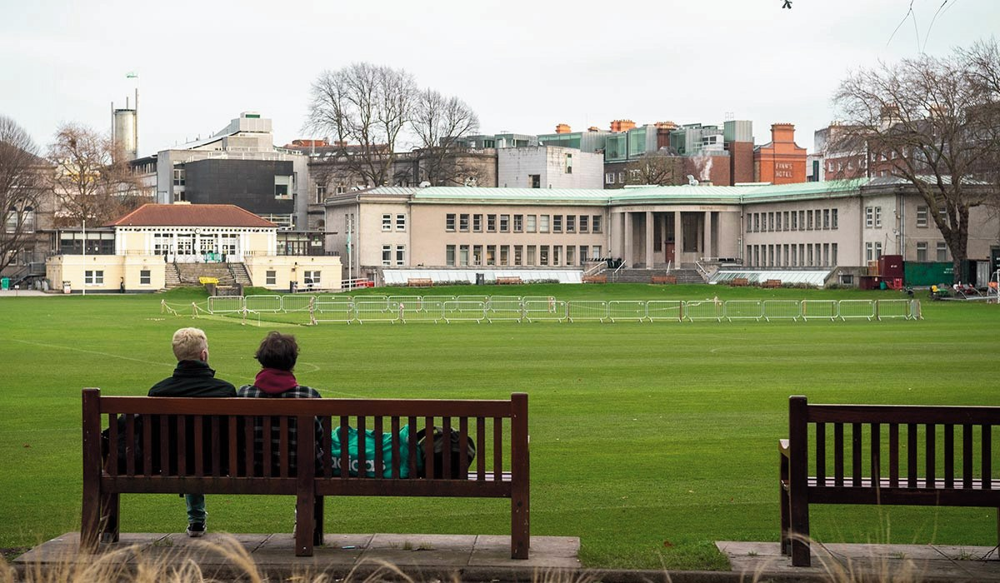

Alongside a place to be together

A welcoming, non-clinical place for people living with dementia, families and carers.
Tea. Conversation. Company. And the freedom to simply be there.
What happens at the café?
The idea is deliberately simple: a relaxed drop-in session in a calm, friendly place.
Have a cup of tea or coffee.
Sit somewhere comfortable and take your time.
Meet and talk.
Spend time with other people living with dementia, families and carers.
Do something — if you want to.
Gentle activities could include music, reminiscence materials or creative activities.
Or simply be there.
There would be no requirement to join an activity or take part in a group conversation.
Occasional conversations with experts.
Alongside could also host relaxed, practical conversations with invited professionals on topics that matter in everyday life — such as nutrition and eating well, hydration, mobility, communication and supporting someone with dementia. These would complement the café's social purpose rather than turn it into a clinical service.
Sometimes the most important thing is simply having somewhere to go where you feel welcome.
Who is it for?
The café would bring people together around dementia, ageing, friendship and lived experience.
- People living with dementia
- Family members and informal carers
- Older adults in the local community
- Trinity researchers, students and staff interested in ageing and dementia
- Health and social care professionals taking part informally
A social place, not a clinical one.
This is a place for company.
Tea, conversation, connection and optional activities.
This isn't a clinic.
The café would offer social support, not diagnosis, treatment or clinical care.
You don't have to explain.
There would be no requirement to disclose a diagnosis.
You don't have to join in.
Taking part in activities would always be a choice.
Visiting the café
The pilot is still being explored. These details will be updated as plans develop.
- Where?
- A suitable location is being explored.
- When?
- Dates and times are to be confirmed.
- How long?
- The initial concept suggests sessions of around 1.5–2 hours.
- What kind of space?
- A calm, accessible and familiar environment, ideally with step-free access, clear signage and accessible toilets nearby.
- How big?
- The concept is for a small group so the atmosphere can remain calm and welcoming.
- Cost?
- To be confirmed as the pilot develops.
We're exploring a simple idea.
Could Trinity provide a welcoming place where people living with dementia, families and carers can come together?
Alongside could help reduce social isolation, foster connection and create a supportive environment where people feel understood and welcome.
It could also provide a human-centred bridge between lived experience, education and research into dementia and ageing.
The project should develop by listening to people living with dementia and carers — not by deciding in advance what people need.
What matters
Welcome
A warm, ordinary place rather than a clinical setting.
Connection
Reducing isolation by creating opportunities to spend time with other people.
Choice
Talk, join an activity, listen, or simply enjoy being there.
Dignity
People and lived experience come before labels.
Accessibility
Physical, sensory and communication needs considered from the beginning.
Help shape Alongside.
We would like Alongside to be shaped by the people who might use it. Our short survey asks what you would want from a dementia café and what would help make it welcoming, accessible and useful.
The survey is open to people living with dementia, family members, friends and carers, as well as professionals and others with an interest in dementia-inclusive communities. It should take only a few minutes to complete.
The survey opens in a new tab.
Get in touch.
This is an early concept. We welcome lived experience, ideas, possible partnerships and suggestions for suitable spaces.
Instagram opens in a new tab.